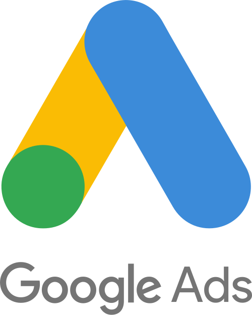
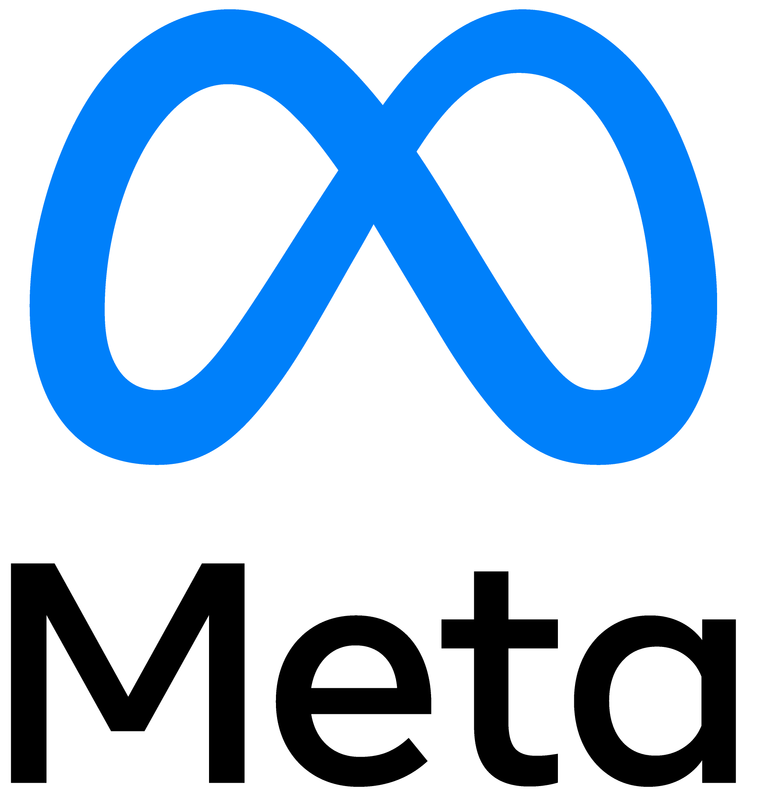
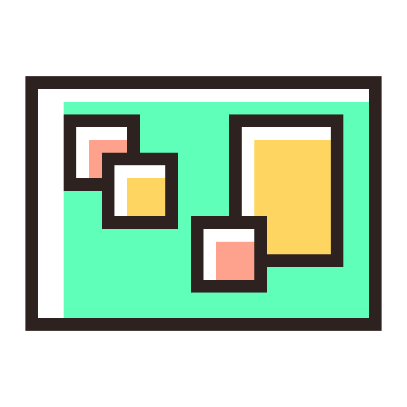

Wij websites die er strak uitzien
Van startende ondernemers tot MKB's - wij helpen jou met online strategie, design en development. Na livegang werken wij met vertrouwde partners door op online ads, gerichte campagnes en performance.
Wij bouwen niet alleen prachtige websites. We zorgen daarna ook voor groei.
Snelle prijsindicatie?
Bekijk een ruwe schatting van de kosten voor jouw project.
Budget website
€ 425 (€ 19/m)
Pagina's
1 pagina
Custom secties
1 custom sectie
- Supersnelle one-pager met duidelijke call-to-action.
- Mobielvriendelijk en technisch netjes opgeleverd.
- Basis contactmogelijkheid en livegang inbegrepen.
Wij ontwikkelen met moderne technologieën van wereldwijde platforms.


Interesse? Bekijk ons werk.
Geen standaardprojecten, wel maatwerk dat werkt. Van groei in leads tot merken die blijven plakken: we maken goed werk van iedere ambitie.
Maurice van Dorst — Creative Director
Benieuwd hoe wij jouw merk digitaal kunnen versterken?
Onze diensten
Technologie & webontwikkeling

Online marketing